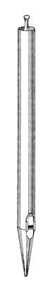
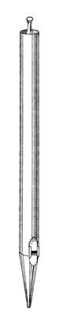
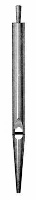
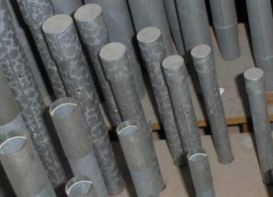

|
Zauberflöte German Zauber Flute German/English |
A stopped harmonic flute of 8', 4' or 2' pitch, invented by Michell & Thynne of London, and first introduced by them in an organ built for the London Inventions Exhibition of 1885, and later moved to Tewkesbury Abbey. Its name means �magic flute�, after the Mozart opera of the same name. A stopped harmonic pipe has a length three times that of a normal stopped pipe speaking the same pitch. Wedgwood, who provides the illustration reproduced here, describes the tone of the Zauberflöte as full, liquid and pure, with a �suspicion of stringiness�. Irwin reports that the pipes have very large ears for stabilizing the tone and for tuning, but this was not a feature of Thynne's original stop. Bonavia-Hunt provides the following description of the original:
From tenor C to top, the pipes are stopped, three times the normal length, and overblown to speak the twelfth. Wood is used from tenor C to E (five notes), and the remainder of the stop from tenor F is of metal. The scale of the tenor C pipe is 2 3/4 in. by 2 1/8 in., its length being 33 1/2 in. from the block. A node-hole, 1/16 in. in diameter, is pierced at a distance of nine-sixteenths of the speaking length of the pipe from the upper lip. The scale of the mid. C note (treb. C note) is 1 15/16 in., its length being 16 3/4 in. from the upper lip, with the node-hole in the same relative position. The mouth is two-ninths in width, and cut up a fourth of its width.
Audsley claims that the Zauberflöte is of greatest value at 4' pitch, and indeed that seems to be the most common pitch (see examples below). He provides a description of the last example voiced by Thynne, also at 4' pitch, in St. John's Church, Richmond, Surrey, England:
The stop is formed of wood and metal, and its unique and characteristic feature obtains in the fact that from tenor C to the top note of its compass the pipes are stopped and harmonic, speaking the first possible upper partial tone - the Twelfth - of the ground tone belonging to their speaking length. The octave of the stop from CC to BB is formed of open wood pipes, the scale of the CC pipe being 2.13 inches by 2.81 inches. The mouth of this pipe is 5/8 inch in height, and has a straight upper lip, about 1/8 inch thick, and slightly rounded. The wind-way is narrow; and both cap and block have twenty nicks cut in a vertical direction. The cap is set 1/8 inch below the edge of the block. The mouth is of the ordinary form, sloped externallly, and without applied ears. The cap is hollowed and cut to a sharp edge at the wind-way.
From tenor C to E = 5 notes, the pipes are of wood, stopped, and harmonic. The scale of the C pipe is 2.13 inches by 2.75 inches; and its length from its lower lip, including sufficient hold for the stopper, is 2 feet 9 1/2 inches. It is perforated with a hole, 1/16 inch in diameter, 19 1/4 inches above the lower lip. In all cases the holes are made as small as possible, being just sufficient to prevent the pipes from speaking their ground tone. The mouth is of the same form as in the open pipes, and has a straight upper lip about 1/16 inch thick, cut up 7/16 inch. The cap, which is set flush with the edge of the block, is sunk on the inside to form the wind-way, and is sloped externally, to correspond with the mouth, leaving 1/8 inch at the wind-way. This treatment, which was used by Schulze in the wood pipes of his Principals, 8 ft., allows a free current of air to approach the mouth from below. In the Zauberflöte this sloping of the cap is slightly rounded, and not straight like that of the upper lip of the mouth. Both the block and cap have twenty-eight fine nicks, cut vertically as in the open pipes. The feet of all the wood pipes are of metal so that exact regulation may be readily accomplished.
We now come to the metal portion of the stop, which commences on tenor F and extends to the top note. The scale of this portion is best given at the middle c1 pipe. The internal diameter of this pipe is 1.91 inches, and its length is 17 inches from the lower lip, allowing about 1 1/4 inches for the stopper. The harmonic perforation is about 1/16 inch in diameter, and is situated at the distance of 9 inches above the languid. The exact proportions of this pipe are shown in [the illustration reproduced here]. The width of the mouth is 1 5/16 inches, and its height is a fraction more than one-fourth of its width. The upper lip is straight; and the mouth has small ears. The wind-way is of medium size and has twenty-six fine nicks. All the pipes have cork stoppers mounted on wooden handles.
The Zauberflöte was made by Mr. Thynne of both 8 ft. and 4 ft. pitch. When of the former pitch, the bass octave was formed of stopped wood pipes, voiced to carry down the characteristic tone of the stop as closely as possible. The true tone, however, obtains only in the harmonic range of the stop.
Sumner gives the location of the node hole as two-fifths along the body.
The accompanying photograph shows a metal Zauberflöte with the caps and node holes clearly visible. This 2' stop is in the organ of the Culver Academies Chapel, Indiana, USA, where it is named Piccolo. The photo appears here courtesy of John Gouwens. A sound clip is available below.
See also Flûte Magique, Harmonic Gedeckt.Osiris contains five examples at 8' pitch, eleven at 4', and seven at 2'. Some sources mention examples at 2-2/3' pitch; no examples of Zauberflöte are known at that pitch, but see Harmonic Stopped Twelfth. The oldest known examples are listed below.
Zauberflöte 4', Choir; Tewkesbury Abbey, Gloucestershire, England; Michell & Thynne 1885 (restored 1980-81). Originally built for the Inventors Exhibition of 1885.
Zauber Flute 4', Choir; Town Hall, Wellington, New Zealand; Norman & Beard 1906 (restored 1986).
See the Sound Files appendix for general information.
| Piccolo 2', Great [a Zauberflöte; see photo above] | Culver Academy, Indiana, USA | Möller 1984 | arpeggio | St. Anne |
|
Original website compiled by Edward L. Stauff. For educational use only. Zauberflote.html - Last updated 24 November 2009. |
Home Full Index |